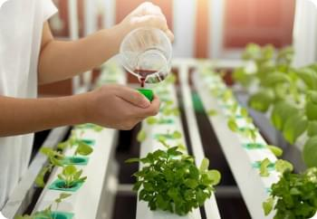

Knowledge Hub
Your guide to passive hydroponic system – what you need to know?
Hydroponic growing systems are a far better option than traditional growing methods. Hydroponic methods ensure the most efficient use of water and increase production. But ...
Read more- 
Nutrients for hydroponic farming – what your plant needs?
You know that growing plants hydroponically is impossible without the proper nutrients. This method of growing helps save water while producing more yield. If you ...
Read more What equipment is needed for commercial hydroponics – is there a benefit?
As a commercial farmer, you know that choosing the right hydroponic system is vital to your success. Let's take a look at some of the ...
Read moreYour guide to passive hydroponic system – what you need to know?
Hydroponic growing systems are a far better option than traditional growing methods. Hydroponic methods ensure the most efficient use of water and increase production. But ...
Read moreNutrients for hydroponic farming – what your plant needs?
You know that growing plants hydroponically is impossible without the proper nutrients. This method of growing helps save water while producing more yield. If you ...
Read moreWhat equipment is needed for commercial hydroponics – is there a benefit?
As a commercial farmer, you know that choosing the right hydroponic system is vital to your success. Let's take a look at some of the ...
Read moreYour guide to passive hydroponic system – what you need to know?
Hydroponic growing systems are a far better option than traditional growing methods. Hydroponic methods ensure the most efficient use of water and increase production. But ...
Read moreNutrients for hydroponic farming – what your plant needs?
You know that growing plants hydroponically is impossible without the proper nutrients. This method of growing helps save water while producing more yield. If you ...
Read moreWhat equipment is needed for commercial hydroponics – is there a benefit?
As a commercial farmer, you know that choosing the right hydroponic system is vital to your success. Let's take a look at some of the ...
Read more